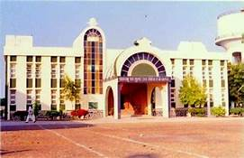

Shri Sant Gajanan Maharaj College of Engineering , Shegaon
SHEGAON,DIST,Buldana-444203-MAHARASHTRA

ABOUT INSTITUTE
Shri Sant Gajanan Maharaj College of Engineering, Shegaon (SSGMCE), one of the premier institutes in the
field of engineering, was established in 1983 by Shri Gajanan Shikshan Sanstha, Shegaon. It is affiliated to
Sant Gadge Baba Amravati University, Amravati, recognized by AICTE, New Delhi and approved by DTE,
Maharashtra State, Mumbai. SSGMCE has the recognition of being the re-accredited institute by NAAC,
Bangalore and the courses are also accredited by NBA (4-5 times), AICTE, New Delhi. The Institute was
selected as the Network Institute under NPIU’s TEQIP, MHRD, Govt. of India under Phase-I. SSGMCE is honoured
with Dewang Mehta National EDUCATION LEADERSHIP AWARD – 2015 & 2016, CII-GRATITUDE AWARD, Nov. 2016 and
honoured as Management College of the Year 2016 by Higher Education Review Magazine, Nov. 2016. Career360
Magazine, April 2017 ranked the institute as “AAA”,
Over three decades, it has successfully nurtured young Indians in engineering and managerial professionals
for the betterment of society and humanity as a whole. It is well known for its visionary management,
dedicated and devoted faculty, state of the art infrastructure and discipline. It is also known for the
overall development of the students’ personality with distinct value based spiritual environment. It
primarily focuses on the four major pillars of the students’ development: Intellectual, Spiritual, Physical
and Social. It also provides facilities for the pursuit of excellence and academically suitable climate of
the scholarship in terms of curriculum and curricular performance of the students.
The Institute offers 5 Undergraduate engineering courses and 5 Postgraduate (4 Engineering and 1 Management)
courses. All the laboratories have been recognized as centers for Ph.D programme. It has excellent physical
facilities in the form of residential and academic buildings, library, laboratories, equipments, hostels,
Yoga and Meditation Centre etc. of its own spread over neat and clean 82 acres of campus. It provides
Indoor/ Outdoor Sport facilities with Wooden Flooring Badminton Court, Hi-tech Gymnasium Centre, Skating
Ring (National Standard), Cricket Ground of an International Standard.
ACADEMICS
Coursess @SSGMCE
Sn
Courses
Year
Intake
National Board of Accreditation Status
Two Year (Full Time) M.E./M.B.A Courses
1
Electrical Engineering (Electronics & Power)
1983
60
Accredited Four Times
2
Electronics & Telecommunication Engineering
1983
120
Accredited Four Times
3
Computer Science & Engineering
1985
60
Accredited Three Times
4
Mechanical Engineering
1993
60
Accredited Three Times
5
Information Technology
2001
60
Accredited Once
Two Year (Full Time) M.E./M.B.A Courses
1
M.E. Electrical Power System
1996
18
--
2
M.E. Digital Electronics
2000
30
Accredited once
3
M.E. Computer Engineering
2012
18
--
4
M.E. Advanced Manufacturing & Mechanical Systems Design
2012
24
--
5
Master of Business Administration
1994
60
Accredited Three Times
Central Library
About Library
Welcome to the Central Library, which is one of the central support services of SSGMCE Shegaon. The mission
of the Central Library is: To provide information services and access to bibliographic and full text digital
and printed resources to support the scholarly and informational needs of the Institute Community.
The Central Library is well equipped with modern facilities and resources in the form of CD-ROMs, On-line
databases, audio video cassettes, books, e-journals,IEEE journals,Research, CSI, CSRI, Encyclopedia patents,
e-standards, theses, reports,periodicals, papers of National and Inter-National Authors CD's, CBT's, Audio/
Video Cassettes monographs etc which spreads fragrance of knowledge.
The library homepage will provide electronic access to various full text & bibliographical databases &
e-journals. I also invite you to visit the library in order to enjoy the wealth of printed resources
available on our shelves.Our Central Library is well equipped neat and clean interior decorated. Having more
than 90061 number of Text and Reference books. More than 29,714 number of Titles. More than 372(Technical
Print Editions 71, online e-journals 275 and Non Technical Journals 26) number of Periodicals on various
subjects including Online Periodicals. Also includes Educational/ Software /Entertainment CD's, Audio/ Video
Cassettes, CBT's."
Library Working Hours:
Monday to Saturday : 8.00 a.m. to 8.00 p.m. Sunday and Holiday : 11.00 a.m. to 5.00 p.m.
Library Services
Online access to e-books & journals and also access to Library information systems Through SLIM 27
Software by Internal members of the institute.
Round Clock Internet / Intranet & Wi-Fi Connectivity.
Network Resource Sharing Service,
Computerized Library Information Services. (OPAC)
Personalized reference Information Services.
Reprographic Services at nominal rate (Xerox / Lamination / Binding)
Inter Library Loan & Lending Services.
Providing book sets to all the students.
Digital Learning Materials: DVDs, CDs, VCDs & Audio-Video Cassettes.
Books for competitive exam such as Gate, TOFEL, GRE, CAT etc.,
Current Awareness Services.
Selective Dissemination Services
.
Online-Offline Services.
Barcode Technology.
LCD Projector.
Central Library- Online Access:
Science Direct Periodicals Package 2019, 275 journals on Engineering, Computer Science Collection, back file access from 2000.
895 DVDs / CD ROMs
Electronics Information Collection – 4253
Software based GATE Practice Question Papers software for Unlimited Users.
Other Services / Facitilies:
Book Sale
Book Exhibition
Book Bank
Xeroxing
Lamination & Comb Binding
About Training and Placement Cell
The institute has a full-fledged training and Placement cell as a Seperate department for developing linkages between institute and industry/corporate bodies in the interest of students. It organizes various programmes at regular intervals for honing soft skillsand improving overall personality of the students. The department arranges for summer and final placement activities by inviting corporate executives for in and off campus recruitment programmes.
The Department is equipped with all audio-visual facilities for assisting in campus activities by the visiting corporate executives. All pass out students of engineering and management courses are properly placed in the industries and elsewhere by this department and the average pay-perks offered to the student currently amount to 3.24 lakhs per annum.
Dr. V. K. Thute
(Training & Placement Officer)
Mobile. No.: 9422926420
Emial ID.: tpossgmce@gmail.com
CONTACT US
Principal office
Postal Address
Shri Sant Gajanan Maharaj College of Engineering, Khamgaon Road
Shegaon-444203,
Dist. Buldhana (M.S.) India